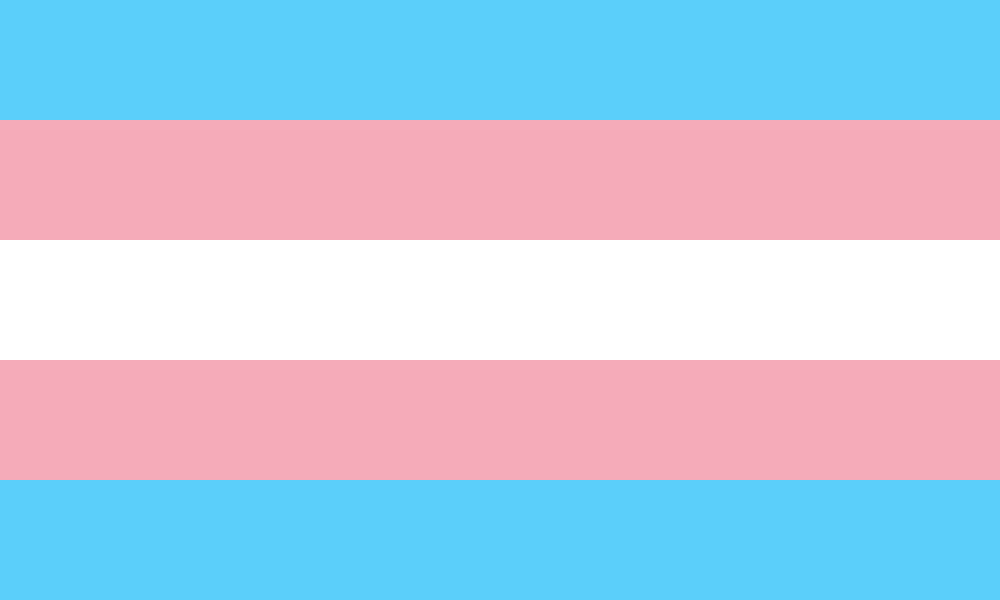

Hi, it's Raine.
A message for my parents and friends.
Surprise, I'm transgender!
But what does that actually mean?
From https://en.wikipedia.org/wiki/Transgender
A transgender (often shortened to trans) person has a gender identity different from that typically associated with the sex they were assigned at birth. [that's me!] The opposite of transgender is cisgender, which describes persons whose gender identity matches their assigned sex.
That's right, sex and gender are different things. So while I am of the male sex, my gender is actually something else. (I'll get to what it is later, it's a bit complicated)
Being transgender (or trans, as I will refer to it from now on) is quite uncommon, and it's not known what causes it. According to https://www.ons.gov.uk/peoplepopulationandcommunity/culturalidentity/genderidentity/bulletins/genderidentityenglandandwales/census2021 approximately 0.5% of the UK population are trans as of 2021, and only 0.06% are non-binary.
This is the trans flag:
Non-binary? Oh no, not another new word...
Yes, another new word. When you think of gender, you probably only think of male and female. However, there's more than just that.